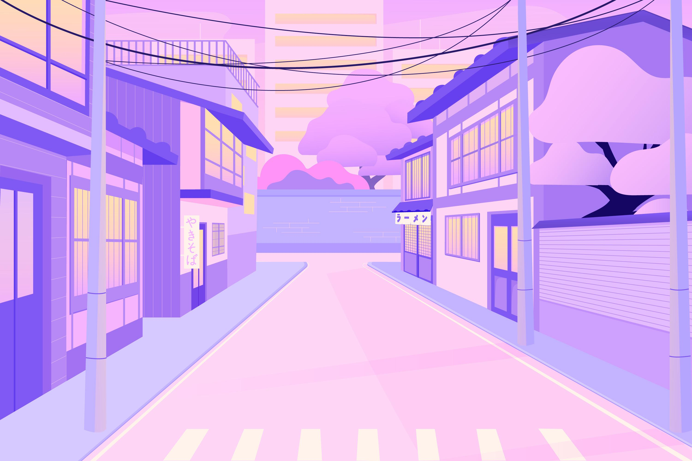
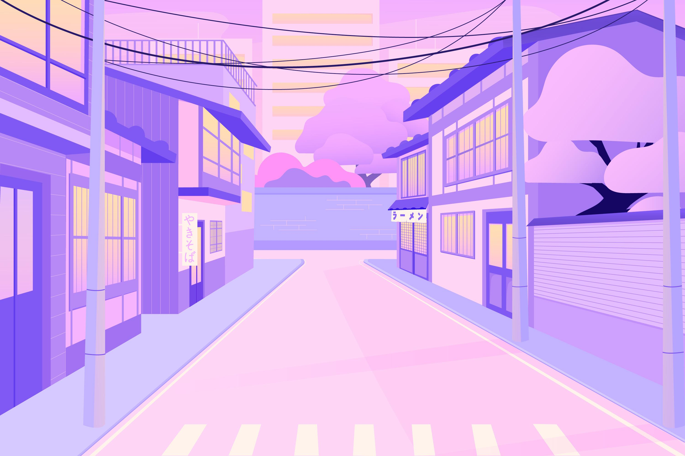

5 простых (на самом деле не очень) советов
Представьте небо и облака
Или листья в ручье. Тут дело в лёгкой медитации, которая помогает успокоиться. Ведь часто именно тревожные мысли о сложных задачах как раз и мешают эти сложные задачи делать. В такие моменты можно закрыть глаза и представить, что чистое небо — это вы, а облака — тревожные мысли. И сколько бы их ни было — ясное небо всегда будет где-то там, за тучами, и никуда не денется. Это упражнение поможет вернуться в настоящий момент, а не волноваться о потенциальных проблемах из будущего.
Включите музыку
Но не любую, и не любимую. Любимая может быть связана с сильными положительными эмоциями, которые тоже очень сильно отвлекают. Подойдёт тихая, спокойная, умеренно-ритмичная. Можно вообще попробовать включить плейлист в «белым шумом» или нейромузыкой.
Прогуляйтесь
Или даже пробегитесь. Лучше найти парк или лес: один эксперимент
показал, что созерцание природы повышает концентрацию, в то время как после просмотра городских пейзажей она наоборот понижается. Можно совместить прогулку с физическими упражнениями или бегом — так в мозг поступит ещё больше кислорода и он будет лучше работать. Но и простая двадцатиминутная прогулка — тоже отличный вариант.
Хорошо ешьте
Мы — не ваша бабушка, но это правда важно. Выбирайте продукты, которые препятствуют резким скачкам сахара в крови. Например, с высоким содержанием клетчатки: овощи, ягоды, бобовые (нут, чечевица, фасоль), коричневый рис, хлеб из цельнозерновой пшеницы.
Читайте
Настоящие бумажные книги. Это правда помогает с концентрацией: чтобы прочитать пост в соцсети, достаточно нескольких минут или даже секунд. А вот интересная книга способна затянуть и на несколько часов и круто тренирует направленное внимание.

 
